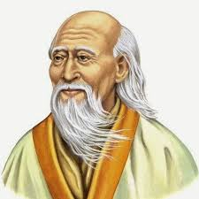

¿Quién fue Lao Tse?
Lao Tse fue un filósofo y sabio chino que vivió probablemente en el siglo VI a.C., aunque los historiadores no tienen fechas exactas. Es conocido como el fundador del taoísmo, una escuela filosófica que busca la armonía con el Tao, o “camino natural del universo”.
Obra principal
Lao Tse es el autor del Tao Te Ching, un libro compuesto por 81 versos que expresa su visión del universo, la humildad, el desapego, y el poder del silencio. Esta obra ha sido traducida a cientos de idiomas y sigue siendo estudiada por su sabiduría profunda.
Filosofía del Tao
El pensamiento de Lao Tse se centra en el concepto del Tao, un principio invisible e inefable que gobierna todas las cosas. Según él, el ser humano debe vivir en sintonía con el Tao, sin forzar los acontecimientos y actuando con naturalidad y compasión.
Estilo de Vida
Lao Tse promovía la vida sencilla, el desapego del poder y la riqueza, y la introspección personal. Valoraba la suavidad sobre la dureza, la paciencia sobre la violencia, y el no actuar (wu wei) como una forma de respeto al orden natural.
Legado
Aunque se sabe poco sobre su vida, la influencia de Lao Tse se extiende hasta hoy. El taoísmo no solo se desarrolló como filosofía, sino también como religión, y ha influido en el arte, la medicina, las artes marciales y el pensamiento espiritual de Asia y del mundo.